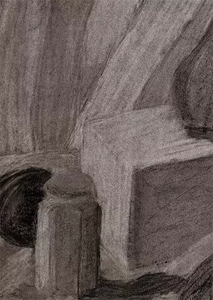

Introductory Drawing Final
This was my final project for Introductory Drawing, a still life charcoal piece incorporating the techniques of scale and shading practiced in the class.

Shoe Sketch
One of my best sketches.
Some More Charcoal Still-Lifes
These were made using a similar process to the final, with careful attention paid to proportions.

Happy 12th Birthday!
This was a design for my little cousin's 12th birthday. Has a strong 80s aesthetic.